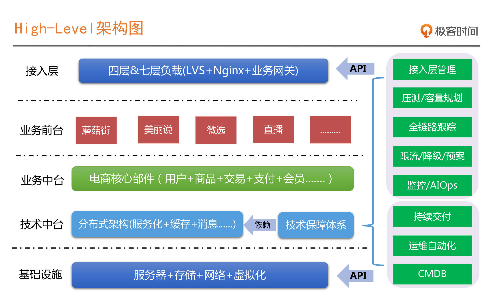
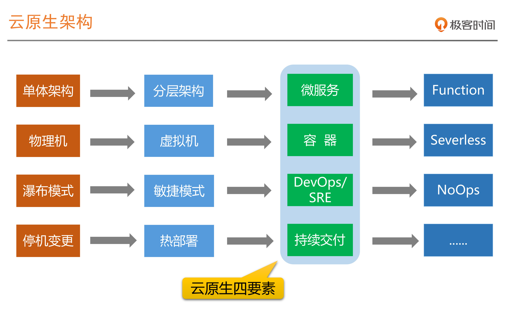
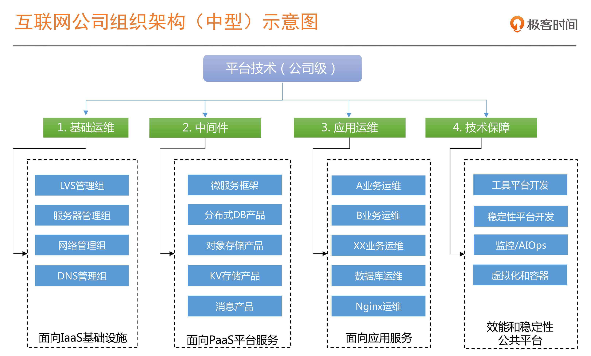

- 00 开篇词 SRE是解决系统稳定性问题的灵丹妙药吗？.md.html
- 01 SRE迷思：无所不能的角色？还是运维的升级？.md.html
- 02 系统可用性：没有故障，系统就一定是稳定的吗？.md.html
- 03 SRE切入点：选择SLI，设定SLO.md.html
- 04 错误预算：达成稳定性目标的共识机制.md.html
- 05 案例：落地SLO时还需要考虑哪些因素？.md.html
- 06 故障发现：如何建设On-Call机制？.md.html
- 07 故障处理：一切以恢复业务为最高优先级.md.html
- 08 故障复盘：黄金三问与判定三原则.md.html
- 09 案例：互联网典型的SRE组织架构是怎样的？.md.html
- 10 经验：都有哪些高效的SRE组织协作机制？.md.html
- 答疑 没什么能阻挡你拓展边界的渴望.md.html
- 结束语 聊聊我的SRE落地心路历程.md.html
- 捐赠
09 案例：互联网典型的SRE组织架构是怎样的？
你好，我是赵成，欢迎回来。
前面三讲，我们从故障这个关键事件入手，讲解了“优先恢复业务是最高优先级”这个原则，基于这个原则，在故障发生后，我们要做好快速响应和应急，并从故障中学习和改进。在这个学习过程中，你应该也能体会到，高效的故障应对和管理工作，其实是需要整个技术团队共同参与和投入的。这就引出了大家落地SRE都会遇到的一个难点：组织架构调整。
那落地SRE必须调整组织架构吗？典型的SRE组织架构是怎样的？接下来，我会用两讲内容和你探讨这些问题，分享我在蘑菇街实践的一些经验。
落地SRE必须调整组织架构吗？
好，那我们就开始吧，先给你看一张技术架构图。- - 这是蘑菇街基于微服务和分布式技术的High-Level的架构图，也是非常典型的互联网技术架构图，自下而上共四层，分别是基础设施层、业务&技术中台层、业务前台层以及接入层，在右侧还有一个技术保障体系。如果你平时经常看一些架构方面的图书和文章，或者听过一些技术大会演讲的话，对这样的图应该不陌生。
你也许会问，咦，我们不是讲组织架构吗？咋一上来就说到技术架构上了？别急，我这么讲是有原因的，在讲SRE的组织架构之前，我们需要先明确两点内容。
第一，组织架构要与技术架构相匹配。
技术架构实现组织目标，组织架构服务并促成技术架构的实现，所以，我们不会单纯去讲组织架构，一定会结合着技术架构的现状和演进过程来分析。
第二，SRE是微服务和分布式架构的产物。
SRE这个岗位，或者说这个通过最佳实践提炼出来的方法论，就是在Google这样一个全球最大的应用分布式技术的公司产生出来的。
正是因为分布式技术的复杂性，特别是在运维层面的超高复杂性，才产生了对传统运维模式和理念的冲击和变革。
如果我们去梳理一下整个软件架构发展的历程，就可以得到下面这张图。我们会发现不仅仅是SRE和DevOps，就连容器相关的技术，持续交付相关的方法和理念，也是在微服务架构不断流行的趋势下所产生的，它们的产生就是为了解决在这种架构下运维复杂度过高的问题。
这样一套架构方法体系，也构成了现在非常流行和火热的概念：云原生架构。- - 所以，不得不承认，这里的现实情况就是，基本所有的SRE经验都是基于微服务和分布式架构的，也都是在这样一个基础下产生的。大到BAT、头条和美团等，中等规模如蘑菇街，甚至是在传统行业中落地比较突出的，如部分运营商和银行。
那么，想要引入SRE体系，并做对应的组织架构调整，首先要看我们的技术架构是不是在朝着服务化和分布式的方向演进。如果架构还没这么复杂，其实也没有必要引入SRE这么复杂的运维体系，这本身就不匹配；再就是如果没有对应的架构支持，SRE技术层面的建设就没有切入点，想做也没法做。
总的来说，如果我们的技术架构朝着微服务和分布式的方向演进，那我们可以考虑落地SRE，这时候，我们的组织架构就要匹配我们的技术架构，也就是说，要想在组织内引入并落地SRE这套体系，原有技术团队的组织架构，或者至少是协作模式必须要做出一些变革才可以。
那下面我就以蘑菇街的技术架构为例，带你一起来看，在这样一个技术架构体系下，SRE的角色、职责分工以及协作模式应该是怎么样的。
蘑菇街的SRE组织架构实践
我们回到在开头给出的技术架构图，可以看到上下左右总共分了五块区域，我们就分块来看。
先看最下面的基础设施层，我们现在也定义为IaaS层，主要是以资源为主，包括IDC、服务器、虚拟机、存储以及网络等部分。
这里基础设施层和所需的运维能力，其实就是我们常说的传统运维这个角色所要具备的能力。但是这一层现在对于绝大多数的公司，无论在资源层面还是在能力层面，都有很大的可替代性。如果能够依托云的能力，不管是公有云还是私有云，这一部分传统运维的能力在绝大部分公司，基本就不需要了。
接下来往上，我们来看中台这一层。这里包括两部分，技术中台和业务中台。
技术中台主要包括我们使用到的各种分布式部件，如缓存、消息、数据库、对象存储以及大数据等产品，这一层最大的特点就是“有状态” ，也就是要存储数据的产品。
业务中台层，就是将具有业务共性的产品能力提炼出来，比如用户、商品、交易、支付、风控以及优惠等等，上面支撑的是业务前台应用。
什么是业务前台呢？如果以阿里的产品体系来举例，可以类比为淘宝、天猫、盒马、聚划算这样的业务产品。
无论这些业务前台的形态是什么样，但是都会利用到中台这些共享能力。这两层就是微服务化形态的业务应用了，这些应用最大的特点就是“无状态”，有状态的数据都会沉淀到刚才提到的技术中台的产品中。
最上面是接入层，分为四层负载均衡和七层负载均衡。前者因为跟业务逻辑不相关，所以通常会跟基础设施层放在一起，由传统运维负责。但是七层负载需要做很多业务层面的规则配置，所以通常会跟中台和前台一起运维，那这部分职责应该属于哪个角色呢？我们接下来就会讲到。
中台及前台的运维职责是怎么分工的呢？
技术中台的很多部件相对比较标准和通用，而且在公有云上也相对比较成熟了，比如数据库和缓存，对于绝大部分公司是可以直接选择对应的公有云产品的，比如蘑菇街，基本都已经将这些能力迁移到了云上。
在没有上云之前，我们的中间件团队会自研对应的技术产品，这部分产品的运维也会由中间件团队自运维。很多大型的公司会有专门的平台运维团队，负责整个中间件产品的运维。
业务中台和前台这两层的运维职责，通常就是我们常说的应用运维、PE（Production Engineer）或者叫技术运营这样的角色来承担。在我自己的团队是统一用PE来代表的。
其实这里PE的职责跟我们前面讲的SRE的职责已经非常接近了。在国内，PE这个角色与Google定义的SRE所具备的能力，最大差别就在于国内PE的软件工程能力有所缺失或相对较弱。这就导致很多基于技术中台的自动化工具、服务治理以及稳定性保障类的平台没办法自己研发，需要由另外一个团队来支撑和弥补，也就是图中技术中台的衍生部分，技术保障体系。
PE这个角色，是我们未来引入SRE实践的非常关键一环，PE要跟业务开发团队一起对业务系统的稳定性负责。
那我们接着看技术保障体系。
技术保障平台，这部分的能力一定基于技术中台的能力之上生长出来的，是技术中台的一部分，如果脱离了这个架构体系，这个技术保障体系是没有任何意义的。
所以这里我们又要强调一个理念：“运维能力一定是整个技术架构能力的体现，而不是单纯的运维的运维能力体现”。微服务和分布式架构下的运维能力，一定是跟整个架构体系不分家的。
它们的具体依赖关系，我在图中已经标示出来，你可以结合我给出的图示再体会和深入理解一下。
回到技术保障体系的建设上，我们看下架构图的右侧，它又分为效率和稳定两块。
工具平台团队，负责效能工具的研发，比如实现CMDB、运维自动化、持续交付流水线以及部分技术运营报表的实现，为基础运维和应用运维提供效率平台支持。
这个要更多地介入到研发流程中，因为流程复杂度比较高，而且还要对接很多研发平台，如Git、Maven、代码扫描、自动化测试以及安全等平台，所以对业务理解及系统集成能力要比较强，但是技术能力要求相对就没那么高。
稳定性平台团队，负责稳定性保障相关的标准和平台，比如监控、服务治理相关的限流降级、全链路跟踪、容量压测和规划。我们会看到这个团队主要是为稳定性保障提供支撑，平台提供出来的能力是可以直接支撑业务开发团队的，反倒是PE这样的角色并不会直接使用。
这个团队和人员的技术能力要求会比较高，因为这里面很多的技术点是要深入到代码底层的，比如Java的字节码或Socket网络；有时还要面对海量数据，以及低时延实时计算的处理，比如全链路跟踪和监控；甚至是门槛更高的AIOps，还要懂专业算法。所以这个团队的建设复杂度会比较高，会需要很多不同领域的专业人员。
好了，到这里，我们从技术架构入手，层层剖析，分析了对应的人员安排和能力，你会发现，按照分层进行职责分工就是：基础设施和接入层的4层负载部分属于传统运维；技术中台如果自研，也就是我们常说的中间件团队，开发同学自己负责对应的工作，如果上云，则由PE负责；业务中台、业务前台以及接入层的7层负责均衡，同样是由PE来负责。
如果我们用一张组织架构图来展示的话，基本形态就是下图：- 
总结
给出这张组织架构图，我们今天的内容也就讲完了。总结一下，从组织架构的角度来讲，对于稳定性或者说SRE我们可以推导出一个结论：SRE并不是一个单纯的岗位定义，它是由多个不同角色组合而成的一个团队。如果从分工来看就是：
SRE = PE + 工具平台开发 + 稳定性平台开发
同时，这里的SRE，跟我们前面讲的运维和架构不分家一样，在组织架构上，是与承担技术中台或分布式架构建设的中间件团队在同一个体系中的。
根据我平时的交流情况看，很多的传统行业也基本是按照这样一个模式组建SRE体系，一方面会有向互联网借鉴的原因，另一方面，我觉得也是本质的原因，就是前面我们提到的，组织架构往往是与技术架构相匹配的，技术上如果朝着分布式和微服务架构的方向演进，那必然会产生出类似的组织模式。
讲到这里，一个典型的互联网式的SRE组织架构就介绍完了，但是仅有组织架构是不够的，还需要继续深入下去，看看这个组织下的每个角色是如何与外部协作，如何发挥稳定性保障的具体职能的。所以，我们下一讲就会结合具体的稳定性保障场景，来分享SRE与其他组织的协作模式是怎么样的。
思考题
最后，给你留一个思考题。
学习完本节课，你觉得在一个组织进行SRE体系建设和变革过程中，哪个角色最为关键呢？同时，哪个角色是跟你最相关的呢？
欢迎你在留言区分享，或者提出你对本节课程的任何疑问，也欢迎你把本篇文章分享给你身边的朋友。
我是赵成，我们下节课见。
© 2019 - 2023 Liangliang Lee. Powered by gin and hexo-theme-book.